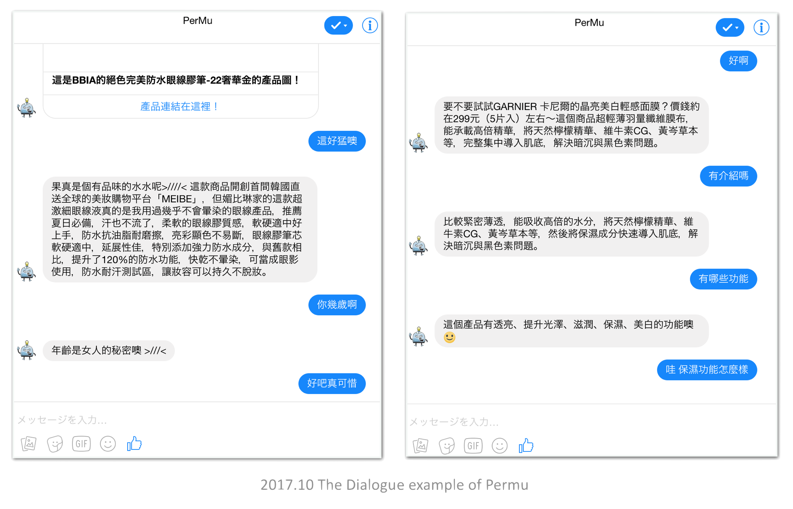
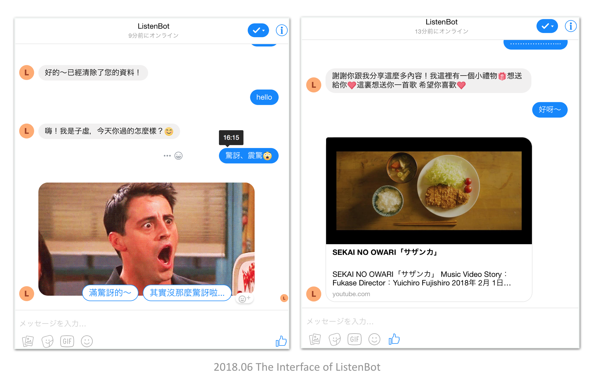

RESEARCH
Chatbot Research
Overview
Chatbot Research, which is an application of Natural Language Processing, mainly consists of three parts: Language Understanding (LU), Dialog Management (DM), and Natural Language Generation (NLG).
In my recent research, I use retrieval-based NLG connected with the cosmetic product database to make cosmetic recommendation system chatbot - Permu. Then I applied Reinforcement Learning Method on Dialog Management to improve the user evaluation and built a new conversational recommendation system - YourRS.
Connected with psychology, I also built a emotional listening chatbot - listenBot. This project combines both computer science and psychology, based on some psychological theories, making a chatbot let users speak their feelings and stories to the bot, and bot will reply in some emotional gifs, text or songs to users. Though it's is a simple work, we spent a lot of time on designing a fluent dialog flow.
THE CHALLENGE
How to give users a human like Chatbot experience?
PROJECT
Permu - Recommendation Dialog System
Permu is a cosmetic recommendation chatbot. With Permu, users can ask about item functions or effects, or get recommendation and advice depending on their skin situations.
Dataset
Cosmetic product database from pixnet.net with 5946 products and more than 20,000 pixnet blog articles
Methods
- User Interview with five females wearing makeup
- Use Name Entity Linking to establish the dataset and word embeddings
- Recurrent Neural Network-based Language Understanding (RNN-based LU)
- Retrieval-based Natural Language Generation (NLG)
- Rule-based Dialogue Management (DM)
Award
1st prize in task-oriented chatbot compete of 2017 Pixnet Hackathon.
RESEARCH
YourRS - RL-based Recommendation Chatbot
Abstract
This paper describes a general model architecture Your-RS (URR Recommendation System) applying Reinforcement Learning (RL) on creating dialogue strategy which can be implemented in any domain dataset for conversational recommendation system (CRS). RL is a promising approach to create dialogue strategy and policy optimizations. In our experiments, we design a hypothetical dataset, collecting real dialogue dataset from Amazon Mechanical Turk, and test our model by human. The method is tested and shown to create a dialogue strategy which performs significantly better, and also can be generated using a small dataset.
Status
Submitted.
PROJECT
ListenBot - Emotional Therapy Chatbot
Abstract
We propose Chinese Listening Chatbot. It’s a chatbot people can talk to. We want to help people solve their emotional problems. Dialogue sequence is based on Full Catastrophe Living and SFBT(Solution-focused therapy). Make users can focus on their body, mood and thinking process. We also include pics and songs in replying contents. Hopefully, we can find some relations between these contents and users response, applying these data to future emotional analysis.
Methods
- Psychological: Catastrophe Living and SFBT(Solution-focused therapy)
- Computer Science: Back-end develop